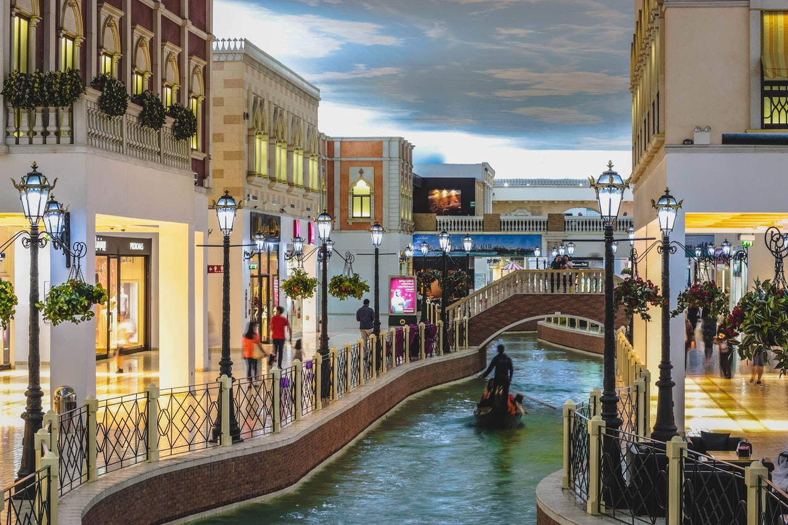
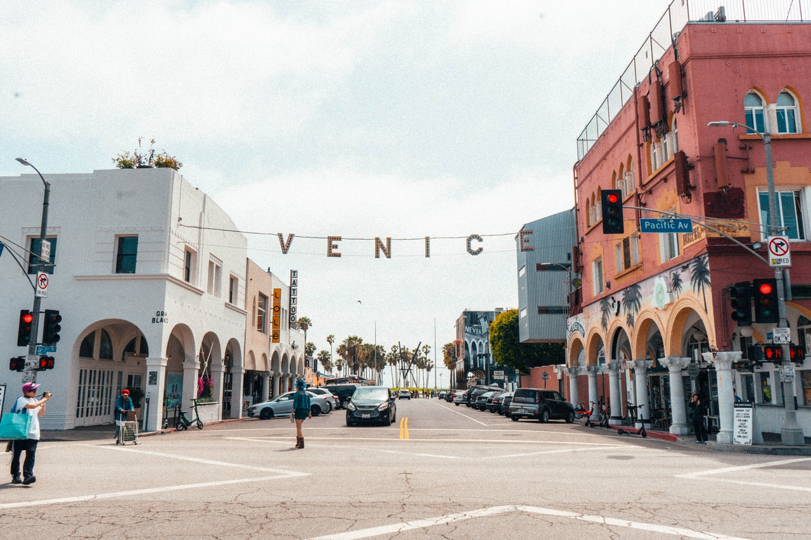

WELCOME
 T
T
 O
O

VENISE
T
O
| Venise (en italien : Venezia /veˈnɛtʦja/ ; en vénitien : Venexia /veˈnɛˑsja/) est une ville côtière du nord-est de l'Italie, sur les rives de la mer Adriatique. Elle s'étend sur un ensemble de 121 petites îles séparées par un réseau de canaux et reliées par 435 ponts. Située au milieu de la lagune vénète, entre les estuaires du Pô et du Piave, Venise est renommée pour cet emplacement exceptionnel ainsi que pour son architecture et son patrimoine culturel, qui lui valent une inscription au patrimoine mondial de l'UNESCO. |

|
Venise est la capitale de la région de la Vénétie. En 2012, la commune compte 269 810 habitants, dont 58 666 intra-muros (Centro storico1). 176 000 résident sur les rives (Terraferma), pour la plupart dans les frazioni de Mestre et Marghera, et les 31 000 habitants restants résident dans d'autres îles de la lagune. Avec Padoue et Trévise, Venise constitue l'aire métropolitaine Padoue-Trévise-Venise (PATREVE), une entité statistique de 1 600 000 habitants. Fondée peu après 528 par des réfugiés fuyant l'invasion lombarde, elle fut la capitale pendant onze siècles, de 697-1797 de la république de Venise. Durant le Moyen Âge et la Renaissance, la ville fut une grande puissance maritime, à l'origine de la Quatrième croisade et victorieuse lors de la bataille de Lépante en 1571 contre l'Empire ottoman. Grâce à ses liens avec l'Asie et le Proche-Orient, dont le marchand et explorateur Marco Polo fut l'initiateur, elle devint également l'une des principales places commerciales d'Europe, notamment de la soie, des céréales et des épices. Enfin, elle est un centre culturel majeur, du XIIIe à la fin du XVIIe siècle, dont les peintres de l’École vénitienne (dont Titien, Véronèse et le Tintoret), Carlo Goldoni et Antonio Vivaldi sont les principaux représentants. |
 SE
SE